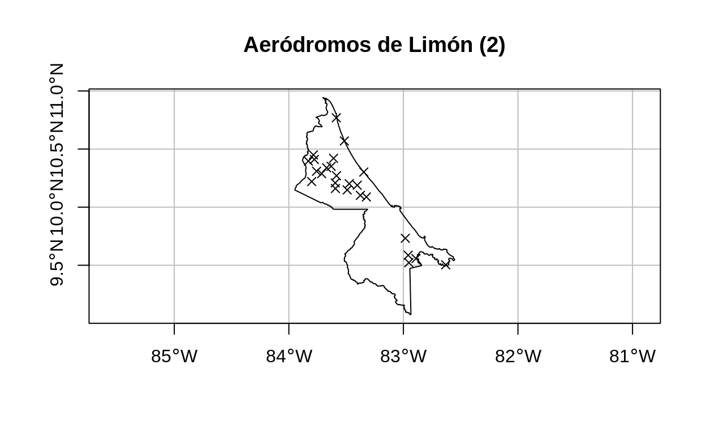
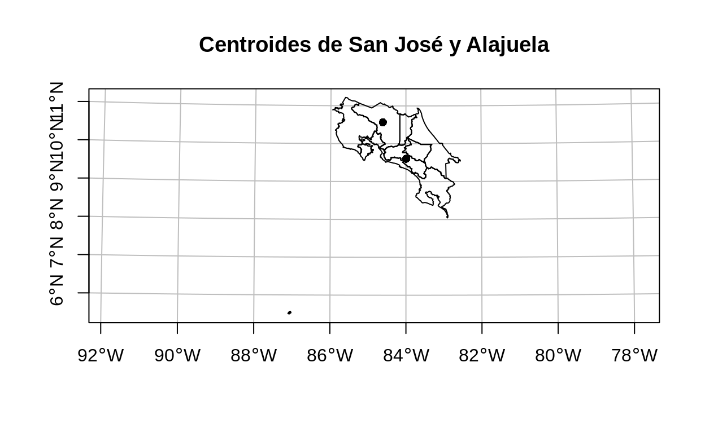

Este documento est estructurado con base en el captulo 4 de Lovelace, R., Nowosad, J. & Muenchow, J. (2020). Geocomputation with R.
Trabajo previo
Lea el captulo 4 de Lovelace, R., Nowosad, J. & Muenchow, J. (2020). Geocomputation with R.
Preparativos
Carga de paquetes
Conjuntos de datos
Provincias de Costa Rica (Instituto Geogrfico Nacional)# Carga de datos
provincias <-
st_read(
"https://raw.githubusercontent.com/tpb728O-programaciongeoespacialr/2021ii/main/datos/ign/delimitacion-territorial-administrativa/provincias-simplificadas_100m.geojson",
quiet = TRUE
) %>%
st_transform(4326)
# Mapeo
plot(
provincias$geometry,
main = "Provincias de Costa Rica",
axes = TRUE,
graticule = TRUE
)
# Carga de datos
cantones <-
st_read(
"https://raw.githubusercontent.com/tpb728O-programaciongeoespacialr/2021ii/main/datos/ign/delimitacion-territorial-administrativa/cantones-simplificadas_100m.geojson",
quiet = TRUE
) %>%
st_transform(4326)
# Mapeo
plot(
cantones$geometry,
main = "Cantones de Costa Rica",
axes = TRUE,
graticule = TRUE
)
# Carga de datos
asp <-
st_read(
"https://raw.githubusercontent.com/tpb728O-programaciongeoespacialr/2021ii/main/datos/sinac/areas-silvestres-protegidas-simplificadas_100m.geojson",
quiet = TRUE
) %>%
st_transform(4326)
# Mapeo
plot(
asp$geometry,
main = "reas silvestres protegidas (ASP) de Costa Rica",
axes = TRUE,
graticule = TRUE
)
# Carga de datos
aerodromos <-
st_read(
"https://raw.githubusercontent.com/tpb728O-programaciongeoespacialr/2021ii/main/datos/ign/infraestructura/aerodromos.geojson",
quiet = TRUE
) %>%
st_transform(4326)
# Mapeo
plot(
provincias$geometry,
main = "Aerdromos de Costa Rica",
axes = TRUE,
graticule = TRUE,
reset = FALSE
)
plot(
add = TRUE,
aerodromos$geometry,
pch = 4,
col = "black"
)
# Carga de datos
viperidae <-
st_read(
"/vsicurl/https://raw.githubusercontent.com/tpb728O-programaciongeoespacialr/2021ii/main/datos/gbif/viperidae.csv",
options = c(
"X_POSSIBLE_NAMES=decimalLongitude",
"Y_POSSIBLE_NAMES=decimalLatitude"
),
quiet = TRUE
)
# Asignacin de CRS
st_crs(viperidae) = 4326
# Mapeo
plot(
provincias$geometry,
main = "Vipridos de Costa Rica",
axes = TRUE,
graticule = TRUE,
reset = FALSE
)
plot(
add = TRUE,
viperidae$geometry,
pch = 16,
col = "brown"
)
spData y spDataLarge: Datasets for Spatial Analysis (Bivand et al.)
Este paquete contiene conjuntos de datos de ejemplo para el libro Geocomputation with R. Su documentacin est en Datasets for Spatial Analysis - spData.
# Instalacin de spDataLarge
# install.packages("spDataLarge", repos = "https://nowosad.r-universe.dev")
# Carga de los paquetes
library(spData)
library(spDataLarge)
Introduccin
Esta leccin brinda una visin general de las operaciones espaciales en datos vectoriales implementadas en el paquete sf y en datos raster implementadas en el paquete terra.
Datos vectoriales
Las operaciones espaciales en datos vectoriales incluyen:
- Creacin de subconjuntos espaciales (spatial subsetting).
- Cruce de datos espaciales (spatial joining).
- Agregacin espacial (spatial aggregation).
- Relaciones de distancia.
Manejo de datos espaciales con el paquete sf
Creacin de subconjuntos espaciales
Es el proceso de seleccin de objetos espaciales con base en su relacin con otros objetos espaciales. Estas relaciones se expresan como predicados espaciales, los cuales estn implementados como mtodos de sf.
La creacin de subconjuntos espaciales es anloga a la creacin de subconjuntos por datos de atributos. Puede realizarse a travs de los operadores [ y $ del paquete base de R o por medio de la funcin filter() de dplyr.
En los dos ejemplos siguientes, se utiliza el mtodo st_within() para filtrar los puntos contenidos en un polgono. Primero, se utilizan los operadores del paquete base.
# Seleccin de la provincia de Limn (por atributos)
limon <- provincias[provincias$provincia == "Limn",]
# Seleccin de los aerdromos ubicados en Limn (espacial)
aerodromos_limon <- aerodromos[limon, , op = st_within]
# Mapa de aerdromos
plot(
limon$geometry,
main = "Aerdromos de Limn (1)",
axes = TRUE,
graticule = TRUE,
reset = FALSE
)
plot(
aerodromos_limon$geometry,
pch = 4,
color = "black",
add = TRUE
)
El mismo resultado se obtiene con las funciones y operadores de Tidyverse.
# Seleccin de la provincia de Limn (por atributos)
limon <-
provincias %>%
filter(provincia == "Limn")
# Seleccin de los aerdromos ubicados en Limn (espacial)
aerodromos_limon <-
aerodromos %>%
filter(st_within(x = ., y = limon, sparse = FALSE))
# Mapa de aerdromos
plot(
limon$geometry,
main = "Aerdromos de Limn (2)",
axes = TRUE,
graticule = TRUE,
reset = FALSE
)
plot(
aerodromos_limon$geometry,
pch = 4,
color = "black",
add = TRUE
)

En el anterior llamado a filter(), la expresin x = . es equivalente a x = aerodromos. Para una explicacin sobre el argumento sparse, por favor lea la seccin 4.2.2. del libro Geocomputation with R de R. Lovelace et. al..
Adems de st_within(), sf implementa predicados espaciales como, entre otros, st_contains(), st_intersects() y st_disjoint(), los cuales se ejemplifican en el siguiente bloque de cdigo.
## Ejemplo de st_contains: ASP contenidas en Limn
# Seleccin de las ASP contenidas en Limn
asp_limon <-
asp %>%
filter(st_contains(x = limon, y = ., sparse = FALSE))
# Mapa de ASP contenidas en Limn
plot(
limon$geometry,
main = "ASP contenidas en Limn",
axes = TRUE,
graticule = TRUE,
reset = FALSE
)
plot(asp_limon$geometry, col = "green", add = TRUE)
## Ejemplo de st_intersects: ASP intersecadas con Limn
# Seleccin de las ASP intersecadas con Limn
asp_limon <-
asp %>%
filter(st_intersects(x = limon, y = ., sparse = FALSE))
# Mapa de ASP intersecadas con Limn
plot(
limon$geometry,
main = "ASP intersecadas con Limn",
axes = TRUE,
graticule = TRUE,
reset = FALSE
)
plot(asp_limon$geometry, col = "green", add = TRUE)
## Ejemplo de st_disjoint: ASP ubicadas fuera de Limn
# Seleccin de las ASP ubicadas fuera de Limn
asp_fuera_limon <-
asp %>%
filter(st_disjoint(x = limon, y = ., sparse = FALSE))
# Mapa de ASP ubicadas fuera de Limn
plot(
provincias$geometry,
main = "ASP ubicadas fuera de Limn",
axes = TRUE,
graticule = TRUE,
reset = FALSE
)
plot(asp_fuera_limon$geometry, col = "green", add = TRUE)
Cruce de datos espaciales
El cruce no espacial de dos conjuntos de datos se basa en uno o varios campos (llamados llaves o keys) que estn presentes en ambos conjuntos. Los cruces espaciales se basan en un principio similar pero, en lugar de campos comunes, la relacin entre los conjuntos se realiza a travs de una operacin topolgica, a veces llamada spatial overlay. Al igual que con los datos de atributos, el cruce espacial, ejecutado con el mtodo st_join(), agrega una o varias columnas al conjunto de datos destino (i.e.el argumento x de la funcin), provenientes del objeto fuente (i.e.el argumento y).
En el siguiente ejemplo, se cruzan los registros de presencia de una especie (geometras de puntos) con la capa de cantones (geomtras de polgonos), para agregar la columna de nombre del cantn al conjunto de registros de presencia.
# Filtrado de los registros de Bothrops asper (serpiente terciopelo) en el conjunto de vipridos
terciopelos <-
viperidae %>%
filter(species == "Bothrops asper")
# Mapeo de la capa de terciopelos
plot(
provincias$geometry,
main = "Bothrops asper (terciopelos) de Costa Rica",
axes = TRUE,
graticule = TRUE,
reset = FALSE
)
plot(
add = TRUE,
terciopelos$geometry,
pch = 16,
col = "brown"
)
# Cruce espacial con la tabla de cantones, para obtener el nombre del cantn
terciopelos <-
terciopelos %>%
st_join(cantones["canton"])
# Despliegue de los datos cruzados
terciopelos %>%
st_drop_geometry() %>%
slice(1:10) %>%
select(stateProvince, canton, locality)
stateProvince canton locality
1 Cartago Turrialba
2 Alajuela San Ramn
3 Puntarenas Quepos
4 Heredia Sarapiqu
5 Sarapiqu La Selva Biological Station
6 Alajuela San Carlos
7 Heredia Sarapiqu
8 Alajuela Tilarn
9 Alajuela San Carlos
10 Puntarenas Golfito La funcin st_join() realiza por defecto un left join, pero puede realizar cruces de otros tipos tambin. Por ejemplo, con el argumento left = FALSE, puede realizarse un inner join. Tambin por defecto, la operacin topolgica que se aplica es st_intersects().
Agregacin de datos espaciales
De manera similar al caso de la agregacin de atributos, la agregacin espacial es una forma de condensar o resumir datos. Los datos agregados muestran estadsticas de una variable (ej. promedio, suma) en relacin con una variable de agrupacin. Esto puede lograrse con el mtodo agregate() de sf o con los mtodos group_by() y summarize() de dplyr, utilizados en combinacin con st_join().
En el siguiente bloque de cdigo, se utiliza summarize() para mostrar el promedio de altitud de los puntos ms altos de Nueva Zelanda en cada regin del pas. Los datos de los puntos ms altos estn en el objeto nz_height y los de las regiones de Nueva Zelanda en el objeto nz.
# Promedio de altitud de puntos ms altos para cada regin de NZ
nz_altitud_promedio_x_region <-
nz_height %>%
aggregate(by = nz, FUN = mean)
# Mapa de altitud promedio en regiones
plot(
nz_altitud_promedio_x_region["elevation"],
main = "Altitud promedio de los puntos altos en cada regin de NZ (1)",
axes = TRUE,
graticule = TRUE
)
El siguiente bloque de cdigo logra el mismo resultado, con los mtodos de dplyr.
nz_altitud_promedio_x_region <-
nz %>%
st_join(nz_height) %>%
group_by(Name) %>%
summarize(elevation = mean(elevation))
# Mapa de altitud promedio en regiones
plot(
nz_altitud_promedio_x_region["elevation"],
main = "Altitud promedio de los puntos altos en cada regin de NZ (2)",
axes = TRUE,
graticule = TRUE
)
Relaciones de distancia
La distancia entre dos objetos sf se calcula con el mtodo st_distance(). Debe utilizarse un sistema espacial de referencia (SRS, CRS) con unidades apropiadas para la medicin (ej. metros).
En el siguiente ejemplo, se calcula la distancia entre puntos correspondientes a los centroides de dos provincias. Antes, con el mtodo st_transform(), la capa de provincias se transforma al CRS CRTM05, que utiliza metros como unidad de medicin.
# Transformacin de la capa de provincias al CRS CRTM05 (EPSG = 5367)
provincias_crtm05 <-
provincias %>%
st_transform(5367)
# Centroide de la provincia de San Jos
centroide_sanjose <-
provincias_crtm05 %>%
filter(provincia == "San Jos") %>%
st_centroid()
# Centroide la provincia de Alajuela
centroide_alajuela <-
provincias_crtm05 %>%
filter(provincia == "Alajuela") %>%
st_centroid()
# Distancia entre los centroides de San Jos y Alajuela
st_distance(centroide_sanjose, centroide_alajuela)
Units: [m]
[,1]
[1,] 126238.5# Mapa de los centroides
plot(
provincias_crtm05$geometry,
main = "Centroides de San Jos y Alajuela",
axes = TRUE,
graticule = TRUE,
reset = FALSE
)
plot(centroide_sanjose$geometry, pch = 16, add = TRUE)
plot(centroide_alajuela$geometry, pch = 16, add = TRUE)

Datos raster
Las operaciones espaciales en datos raster incluyen:
- Creacin de subconjuntos espaciales (spatial subsetting).
- lgebra de mapas (map algebra).
Manejo de datos espaciales con el paquete terra
En los siguientes ejemplos, se utilizarn los conjuntos de datos elev y grain que se crearon en la leccin sobre datos de atributos, los cuales estn tambin incluidos en el paquete spData.
# Conversin a SpatRaster
elev = rast(system.file("raster/elev.tif", package = "spData"))
grain = rast(system.file("raster/grain.tif", package = "spData"))
# Mapeo de los conjuntos de datos de ejemplo
# Elevacin
plot(elev)

# Tipos de granos
plot(grain)
Para mayor facilidad de manipulacin y visualizacin, ambos conjuntos de datos pueden grabarse en disco.
# Especificacin del directorio de trabajo (debe ser una ruta existente)
setwd("/home/mfvargas/")
# Escritura de los objetos raster
writeRaster(elev, filename = "elev.asc", overwrite = TRUE)
writeRaster(grain, filename = "grain.asc", overwrite = TRUE)
Creacin de subconjuntos espaciales
En la leccin sobre operaciones con atributos, se explic como recuperar subconjuntos de objetos raster, ya sea mediante su ID o su posicin en filas y columnas. Los subconjuntos de objetos raster tambin pueden obtenerse mediante la especificacin de coordenadas o de otros objetos espaciales.
# La funcin cellFromXY() retorna el ID de la celda correspondiente a una coordenada
id <- cellFromXY(elev, xy = matrix(c(0.1, 0.1), ncol = 2))
elev[id]
elev
1 16# El mismo resultado puede obtenerse con raster::extract()
terra::extract(elev, data.frame(x = 0.1, y = 0.1))
ID elev
1 1 16Tambin es posible consultar las celdas contenidas en la extensin (i.e.los lmites) otro raster.
clip <- rast(
xmin = 0.9,
xmax = 1.8,
ymin = -0.45,
ymax = 0.45,
resolution = 0.3,
vals = rep(1, 9)
)
# Celdas de elev contenidas en la extensin de clip
elev[clip]
elev
1 1
2 2
3 3
4 4
5 5
6 6
7 7
8 8
9 9
10 10
11 11
12 12
13 13
14 14
15 15
16 16
17 17
18 18
19 19
20 20
21 21
22 22
23 23
24 24
25 25
26 26
27 27
28 28
29 29
30 30
31 31
32 32
33 33
34 34
35 35
36 36 elev
1 18
2 24Los mtodos explicados anteriormente solo retornan ID y valores de celdas. Con el operador [ y el argumento drop = FALSE pueden retornarse objetos raster.
# Objeto raster creado a partir de un rango de ID de celdas
elev[1:2, drop = FALSE]
elev
1 1
2 2
3 3
4 4
5 5
6 6
7 7
8 8
9 9
10 10
11 11
12 12# Objeto raster creado a partir de posiciones de filas y columnas
elev[1, 1:2, drop = FALSE]
elev
1 1
2 2Por ltimo, tambin es posible obtener subconjuntos raster mediante la aplicacin en un objeto raster de una mscara (mask) con la misma extensin y resolucin, y que contenga valores lgicos o NA.
# Creacin de una "mscara"
rmask = elev
values(rmask) = sample(c(NA, TRUE), 36, replace = TRUE)
# Creacin de subconjuntos espaciales mediante la mscara
# Con el operador []
elev[rmask, drop = FALSE]
elev
1 1
2 2
3 3
4 4
5 5
6 6
7 7
8 8
9 9
10 10
11 11
12 12
13 19
14 20
15 21
16 22
17 23
18 24
19 25
20 26
21 27
22 28
23 29
24 30# Con la funcin mask()
mask(elev, rmask)
class : SpatRaster
dimensions : 6, 6, 1 (nrow, ncol, nlyr)
resolution : 0.5, 0.5 (x, y)
extent : -1.5, 1.5, -1.5, 1.5 (xmin, xmax, ymin, ymax)
coord. ref. : +proj=longlat +datum=WGS84 +no_defs
source : memory
name : elev
min value : 1
max value : 36 # Con la funcin overlay()
#overlay(elev, rmask, fun = "max")
lgebra de mapas
El lgebra de mapas divide las operaciones raster en cuatro clases:
- Operaciones locales o de celda por celda.
- Operaciones focales o de vecindario (neighborhood). Generalmente, el valor de salida de cada celda proviene de un bloque de entrada de 3 x 3 celdas.
- Operaciones zonales. Son similares a las focales, pero el bloque de entrada puede tener tamaos y formas irregulares.
- Operaciones globales. Los valores de salida de cada celda provienen de uno o varios objetos raster completos.
Esta clasificacin se basa en la cantidad o forma de las celdas utilizadas por cada pixel durante el procesamiento. Otras clasificaciones pueden estar basadas en el rea de aplicacin del anlisis (ej. terreno, hidrologa, teledeteccin).
Operaciones locales
Son operaciones realizadas celda por celda en una o varias capas raster.
# Reclasificacin de una capa raster
rcl <-
matrix(c(0, 12, 1, 12, 24, 2, 24, 36, 3), ncol = 3, byrow = TRUE)
recl <- classify(elev, rcl = rcl)
plot(recl)
# lgebra raster con operadores aritmticos
elev_doble <- elev + elev
plot(elev_doble)
elev_cuadrado <- elev * elev
plot(elev_cuadrado)
elev_mayor_30 <- elev > 30
plot(elev_mayor_30)
# Clculo de NDVI
multi_raster_file = system.file("raster/landsat.tif", package = "spDataLarge")
multi_rast = rast(multi_raster_file)
ndvi_fun = function(nir, red){
(nir - red) / (nir + red)
}
ndvi_rast = lapp(multi_rast[[c(4, 3)]], fun = ndvi_fun)
plot(multi_rast)
plot(ndvi_rast)
Operaciones focales
En este tipo de operaciones, el valor de salida de cada pixel procesado depende de un bloque compuesto por una celda central y sus vecinas. Este vecindario (tambin llamado kernel, filtro o ventana mvil) es tpicamente de 3 x 3 celdas, pero puede tomar otras formas y tamaos. Una operacin focal aplica una funcin de agregacin (ej. promedio, mnimo, mximo) a todas las celdas del vecindario, utiliza la salida como nuevo valor de la celda central correspondiente y se mueve a la celda siguiente.
Las operaciones focales tienen aplicaciones en reas como procesamiento de imgenes (ej. remocin de valores extremos) o anlisis de terreno (ej. clculo de pendiente o direccin de flujo).
Operaciones zonales
De manera similar a las focales, las operaciones zonales aplicacin de agregacin a mltiples celdas raster. Sin embargo, en el caso de las zonales, generalmente se usa un raster categrico que define las zonas, a diferencia de la ventana predefinida que se emplea en las focales. Por lo tanto, las celdas que definen el filtro zonal no deben ser necesariamente vecinas.
# Uso de zonal() para encontrar la elevacin promedio de cada tipo de grano
zonal(elev, grain, fun = "mean") %>%
as.data.frame()
grain elev
1 clay 14.80000
2 silt 21.15385
3 sand 18.69231Operaciones globales
Las operaciones globales pueden considerarse un caso particular de las operaciones zonales, en las cuales un raster completo corresponde a una zona. Las operaciones globales ms comunes incluyen estadsticas descriptivas para todo un conjunto raster.
# Lectura de una capa raster de altitud
altitud <-
rast(
"/vsicurl/https://raw.githubusercontent.com/tpb728O-programaciongeoespacialr/2021ii/master/datos/worldclim/altitud.tif"
)
# Resumen
summary(altitud)
altitud
Min. : 1.0
1st Qu.: 63.0
Median : 254.0
Mean : 561.3
3rd Qu.: 852.0
Max. :3628.0
NA's :83907 # Histograma
hist(altitud)
Otras operaciones globales incluyen clculos de distancia y rasters de peso (weight rasters) (ej. distancia de cada celda a una celda objetivo, costo en combustible de cada celda a una celda objetivo).